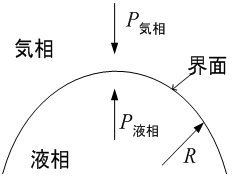
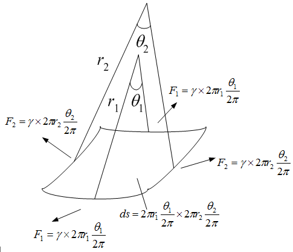
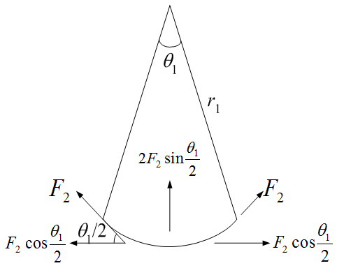

広告
表面張力
下図の様な異なる相の界面には、表面張力が作用します。 この力は、気液界面に限らず、液液界面や固液界面にも作用します。

表面張力をDp[N/m2] 、曲率半径をR[m] 、表面張力係数をg [N/m]とすると次式が成り立ちます。
\[
\begin{aligned}
\Delta P&=\Delta P_{\mathrm{gas}}-\Delta P_{\mathrm{liquid}}\\[6pt]
&=\frac{2\gamma}{R}
\end{aligned}
\]
これは、ラプラス(Laplace)の式と呼ばれています。 次の様に導出されます。

上図は、微小曲面に作用する表面張力の釣り合いを表しています。 r1[m], r2[m] は曲率半径です。下図に詳細です。

中心方向の力をD F1[N/m2] とすると
\[
\begin{aligned}
\Delta F_1
&=2F_2\sin\frac{\theta_1}{2}\\[6pt]
&=2\gamma\,2\pi r_2\frac{\theta_2}{2\pi}\sin\frac{\theta_1}{2}\\[6pt]
&=2\gamma r_2\theta_2\sin\frac{\theta_1}{2}\\[6pt]
&\cong 2\gamma r_2\theta_2\frac{\theta_1}{2}\\[6pt]
&=\gamma r_2\theta_2\theta_1
\end{aligned}
\]
同様に
\[
\Delta F_2=\gamma r_1\theta_1\theta_2
\]
従って、表面張力による圧力差D P[N/m2]は次式となります。
\[
\begin{aligned}
\Delta P
&=\frac{\Delta F_1+\Delta F_2}{\Delta s}\\[6pt]
&=\frac{
\gamma r_2\theta_2\theta_1+\gamma r_2\theta_1\theta_2
}{
2\pi r_1\frac{\theta_1}{2\pi}\times
2\pi r_2\frac{\theta_2}{2\pi}
}\\[6pt]
&=\frac{
\gamma r_2\theta_2\theta_1+\gamma r_2\theta_1\theta_2
}{
r_1\theta_1r_2\theta_2
}\\[6pt]
&=\gamma\frac{r_1+r_2}{r_1r_2}
\end{aligned}
\]
曲面が球面の場合は、次式となります。
\[
\Delta P=\frac{2\gamma}{r}\qquad \because\ r_1=r_2
\]
| prev | | | up | | | next |